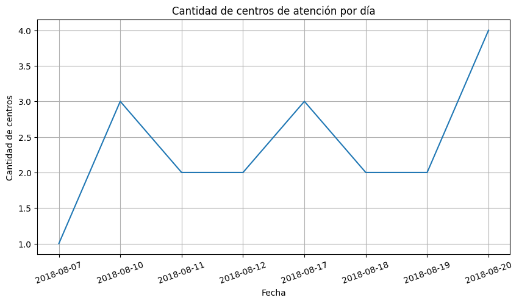
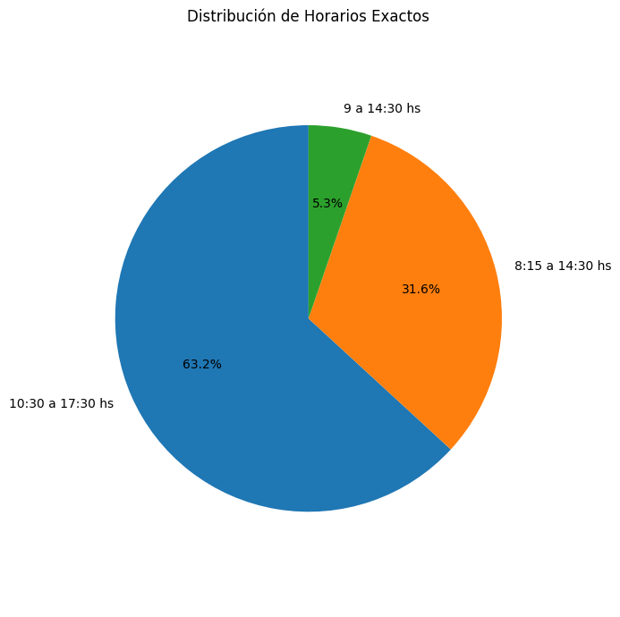

1. Atenciones por Día
Este gráfico muestra la evolución temporal de la actividad de los centros móviles a lo largo del tiempo. Permite identificar picos de actividad, como los fines de semana, y detectar tendencias generales.

Evolución temporal de atenciones
2. Tipos de Consulta
El gráfico de torta muestra las proporciones de los diferentes tipos de consulta realizadas en los centros veterinarios móviles. Es útil para ver qué tipo de atención es más demandada.

Distribución de tipos de consulta
3. Horarios Exactos
Este gráfico de torta ayuda a visualizar los horarios más comunes en los que los centros prestan atención. La información puede ser útil para ajustar la disponibilidad de los servicios.

Distribución de horarios de atención